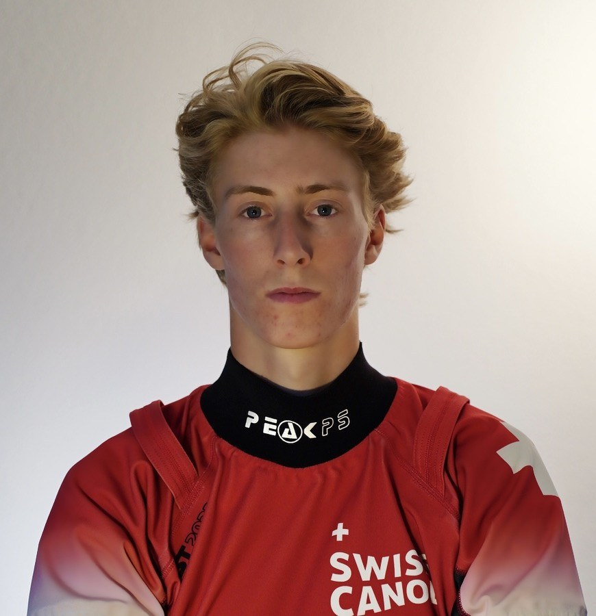
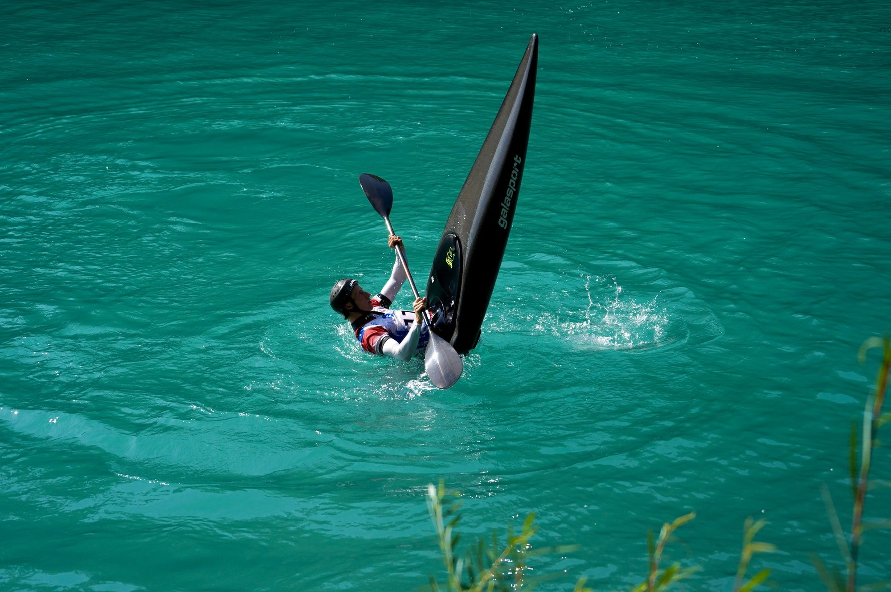
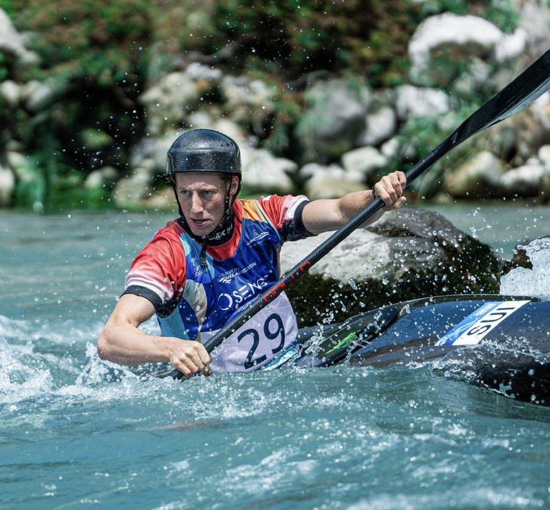
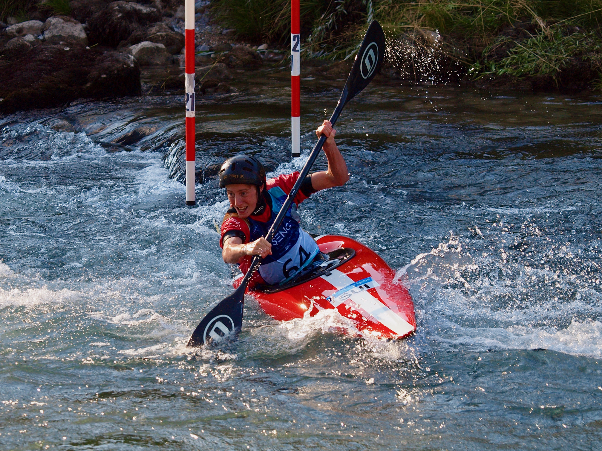
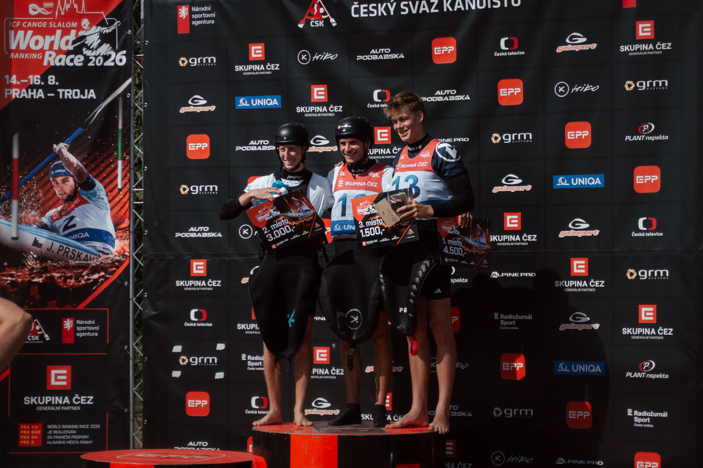
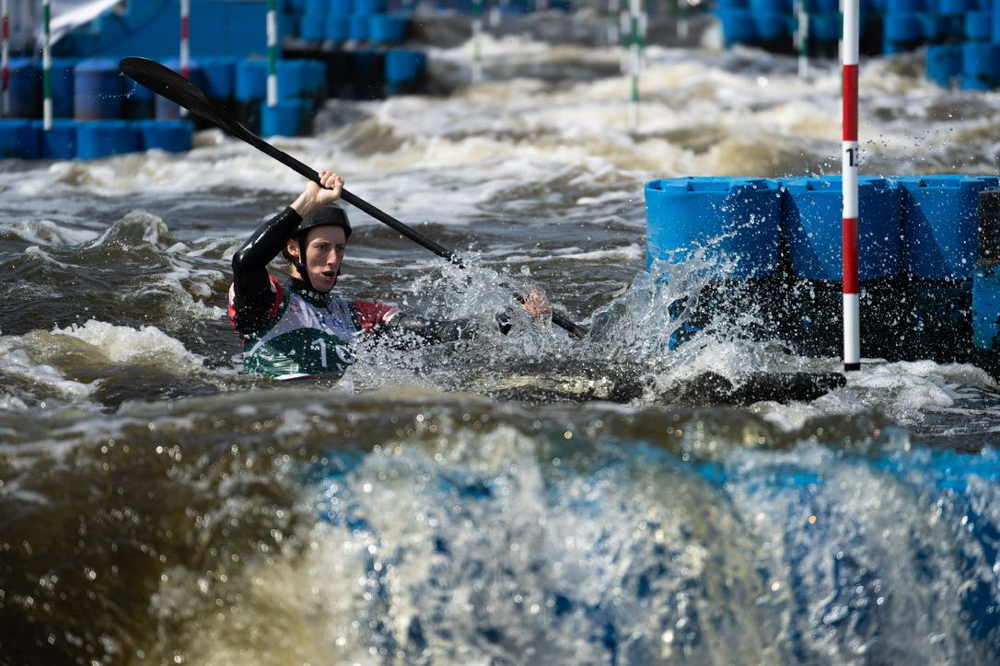
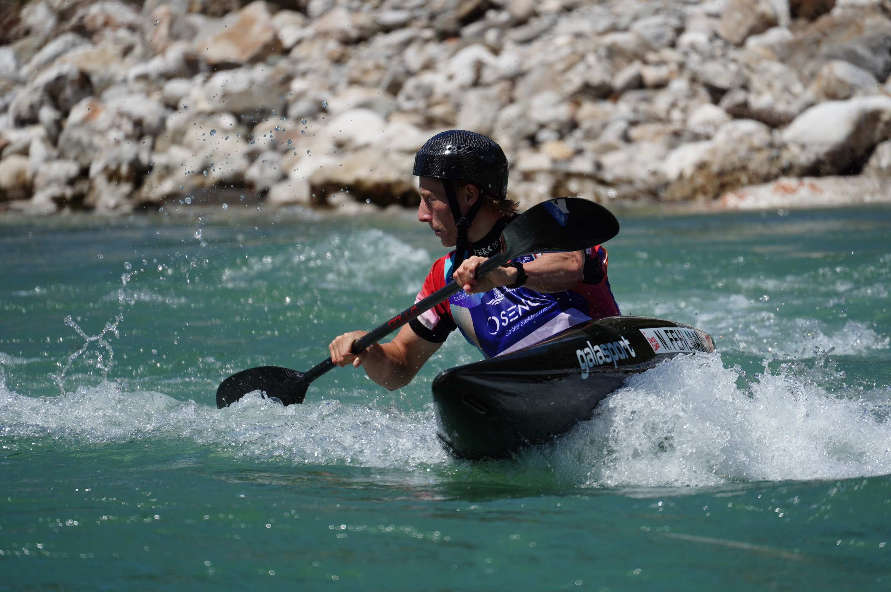

Kanuslalom-Athlet aus Solothurn im Schweizer Nationalteam. Kajak und Kajak-Cross — auf dem Weg zu den nächsten internationalen Erfolgen.

Ich bin Nicolas Fehlmann (Jahrgang 2005), Kanuslalom-Athlet aus Solothurn und Teil des Schweizer Nationalteams. Den Weg ins Boot fand ich über einen Schnupperkurs im Verein – und schon nach den ersten Fahrten liess mich das Wildwasser nicht mehr los. Seit 2019 gehöre ich dem nationalen Kader an und trainiere heute in Basel.
Was mich am Kanuslalom fasziniert, ist das Zusammenspiel mit dem Wasser – nicht gegen die Strömung anzukämpfen, sondern mit ihr zu arbeiten und in jeder Welle die schnellste Linie zu finden. Dazu kommt die Vielseitigkeit der Sportart: vom technisch-präzisen Kajak-Einer (K1) bis zum packenden Kopf-an-Kopf des Kajak-Cross. Mein langfristiges Ziel habe ich klar vor Augen – die Olympischen Spiele.

Trust the
Process.
| 2026 | 3. Platz | World-Ranking-Race, Prag · Slalom |
| 2. Platz | World-Ranking-Race, Prag · Cross | |
| Vizeschweizermeister | Schweizermeisterschaft · K1 | |
| 8. Platz | U23-WM · Kajak-Cross | |
| Qualifikation Eliteteam | Kajak-Cross | |
| 1. Platz | World-Ranking-Race, Krakau · Cross | |
| 3. Platz | World-Ranking-Race, Ivrea · Cross | |
| 3. Platz | World-Ranking-Race, Hüningen · Cross | |
| 21. & 22. Platz | Weltcup #1 & #2 · Cross | |
| 2025 | 1. Platz | ECA Cup, Solkan · K1 |
| 19. Platz | U23-WM · K1 | |
| 2024 | 15. Platz | Erste U23-EM · Kajak-Cross |
| 5. Platz | Schweizermeisterschaft · K1 | |
| 2023 | Halbfinal-Quali | Erste Weltcup-Teilnahme · K1 |
| 2022 | Europameister | Team Abfahrt · Junioren-EM |
| 2021 | Erste Junioren-WM-Teilnahme | Junioren-WM · K1 |


Als Teil von Team Fehlmann unterstützt du mich bei Trainings, Material und Wettkampfreisen – und wirst Teil einer Gemeinschaft, die meine Reise Richtung Olympia hautnah miterlebt. Beim Saisonapéro triffst du die anderen Köpfe hinter Team Fehlmann – und bist von da an nicht mehr nur Zuschauer, sondern mittendrin.

Vom 14. bis 16. August ging in Prag-Troja der ICF Canoe Slalom World Ranking Race über die Bühne. Zwei Starts, zwei Podestplätze: Im Slalom erkämpfte ich mir den 3. Platz, im Kajak-Cross legte ich noch einen drauf und holte Rang 2. Ein starkes Wochenende auf einem der schnellsten Kanäle Europas — und ein optimaler Abschluss vor dem letzten Rennen der Saison: der Europameisterschaft Ende September in Ivrea.

Vom 30. Juni bis 5. Juli fanden in Krakau die ICF Junior & U23 Kanuslalom-Weltmeisterschaften statt — 445 Athleten aus 51 Nationen. Im K1 lief es nicht nach Plan — ein schwaches Rennen, das nicht meinem Niveau entsprach. Im Kajak-Cross kämpfte ich mich durch die K.o.-Runden bis in den Halbfinal und belegte am Ende den 8. Platz — ein gutes Resultat auf internationalem Niveau. Die Vorbereitung und der Fokus liegen jetzt auf der U23-EM in Epinal anfangs August.
Mit drei Weltcups in drei Wochen startete die Saison intensiv. In Tacen und Prag war ich im Kajak-Cross am Start und belegte den 21. und 22. Platz — solide Ergebnisse in einem starken internationalen Feld. In Augsburg stand nur K1 auf dem Programm: ein guter Lauf, der aber durch eine knappe 50-Sekunden-Strafe teuer bezahlt wurde und an einem deutlich besseren Resultat vorbeischrammte. Trotzdem wichtige Wettkampfkilometer gesammelt vor der U23-WM in Krakau.
Für Medienanfragen, Sponsoring-Kooperationen oder sonstige Anliegen — meldet euch gerne direkt.
